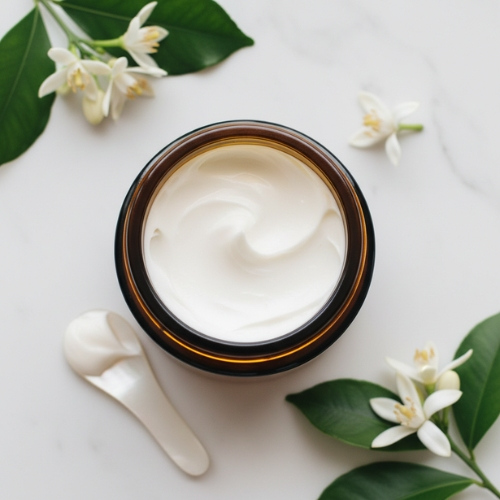
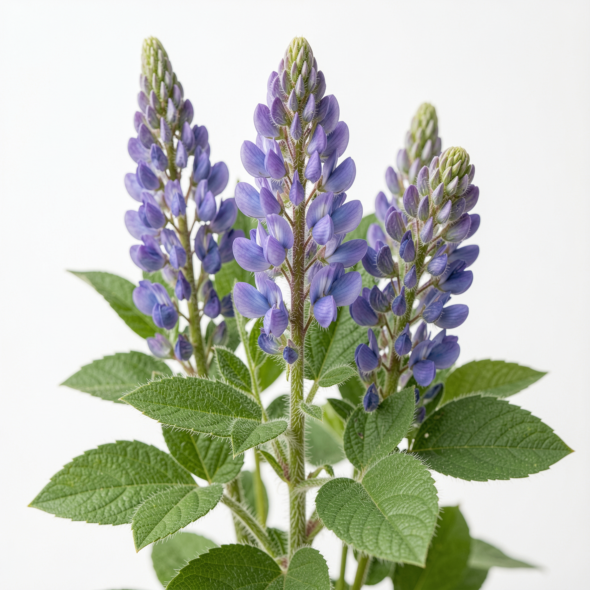
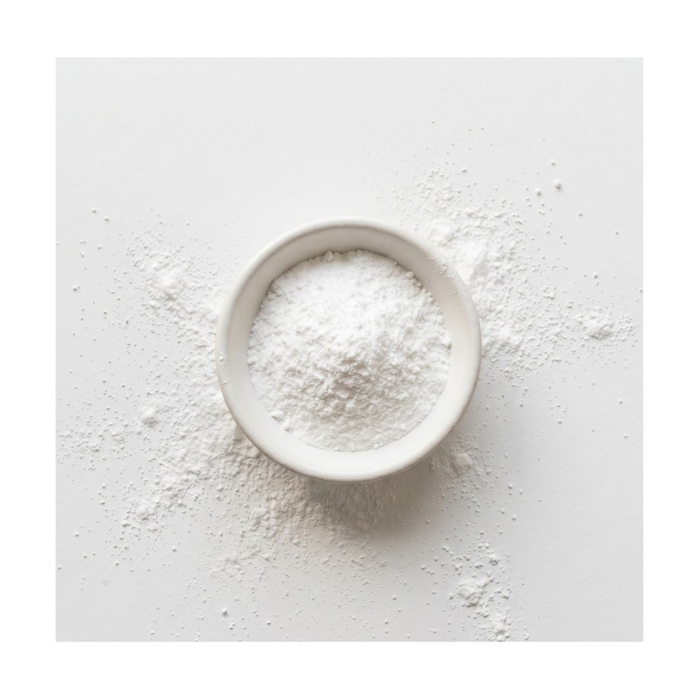
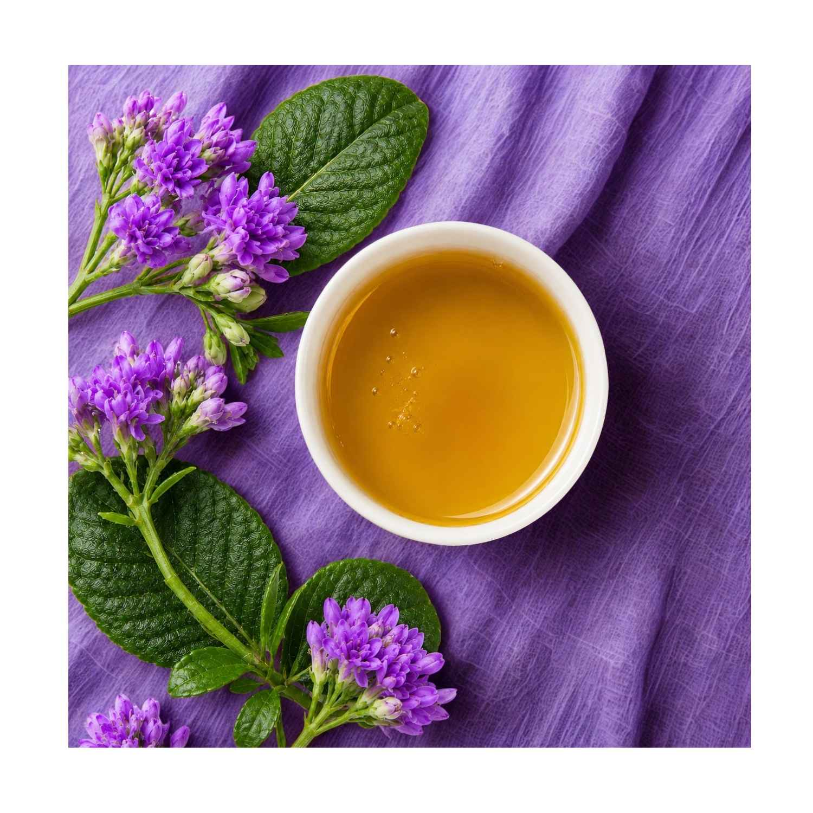
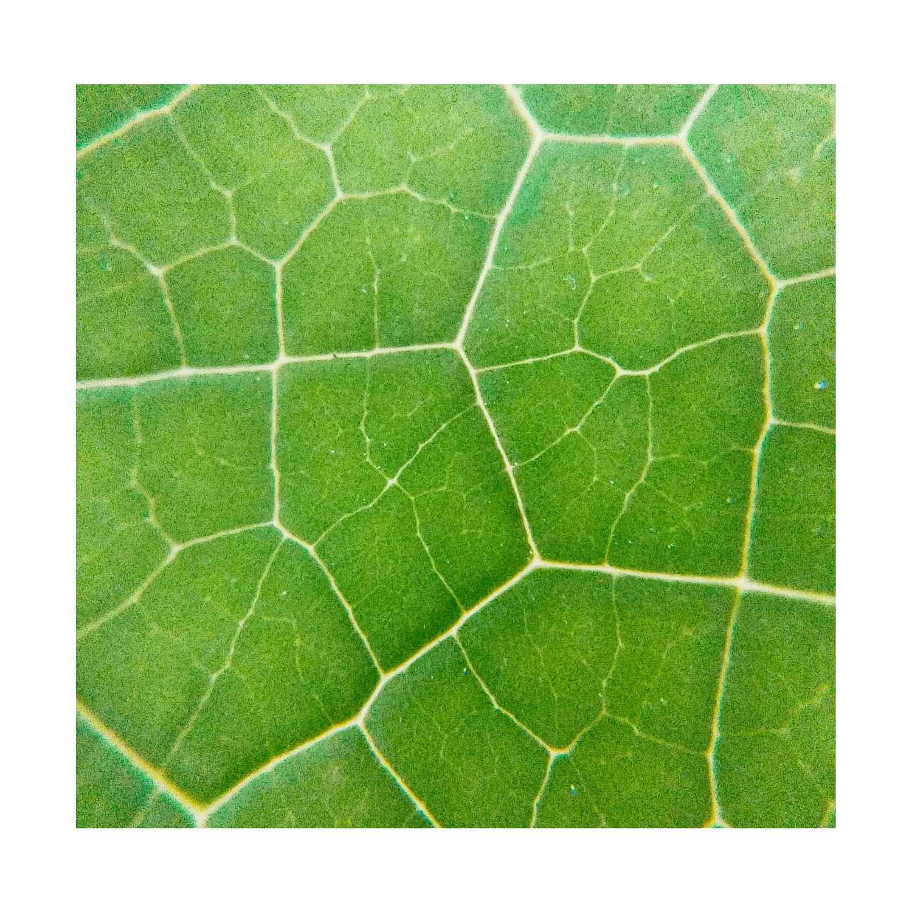
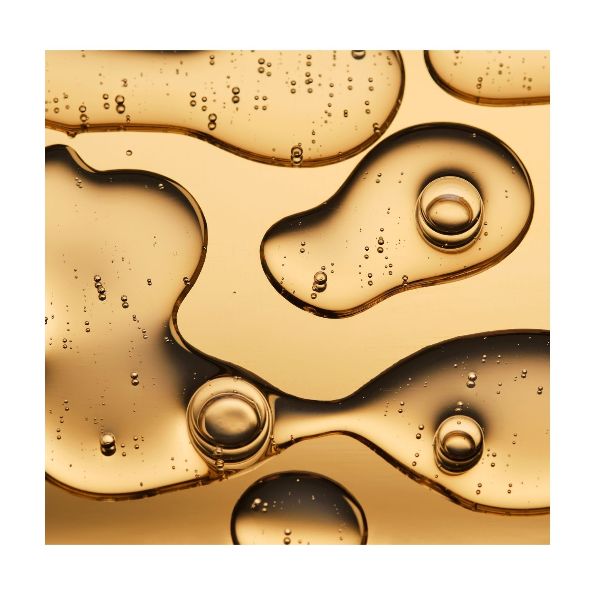

Designed for blemish-prone skin — an anti-ageing daily crème that delivers without triggering breakouts. Three clinically proven actives and a skin-identical oil phase that works at the cellular level. All the benefits, none of the compromise.

A crème — richer than a moisturiser, lighter than a traditional face cream. Engineered for skin showing visible ageing and breakout-prone tendencies — a combination most "anti-ageing" formulas refuse to address.
Bakuchiol delivers retinol-equivalent collagen stimulation without sensitisation. Neurophroline™ blocks cortisol before it breaks collagen down. Cacay Oil — three times the natural retinol of rosehip — supports renewal without congesting pores. Available in 60g daily-use and 30g travel size.
Real percentages. Clinically validated concentrations.

Smooths texture and reduces fine lines — retinol-equivalent activity without irritation or photosensitivity.1
Clinically shown to reduce fine lines by 19.6% after 12 weeks at 0.5–1%.
Reduces cortisol-driven inflammation and supports barrier recovery in stressed skin.2
Clinically shown to reduce skin reactivity markers after 28 days.

Strengthens the barrier, evens tone, reduces redness and sebum production.4
Formulated within the clinically proven effective range of 2–5%.
Daily, AM and/or PM.
Apply a pea-sized amount after serum and before SPF. Press into the face, neck, and décolletage. Designed for daily use — Bakuchiol is photo-stable, so it can be worn under SPF without degradation.
Pro-Tips
Aqua (Water), Caprylic/Capric Triglyceride, Cetearyl Olivate, Sorbitan Olivate, Glycerin, Niacinamide, Caryocar Brasiliense (Cacay) Fruit Oil, Bakuchiol, Tephrosia Purpurea Seed Extract (Neurophroline™), Squalane, Cetearyl Alcohol, Tocopherol, Sodium Stearoyl Glutamate, Xanthan Gum, Sodium Phytate, Benzyl Alcohol, Dehydroacetic Acid, Citrus Sinensis (Sweet Orange) Peel Oil, Cananga Odorata (Ylang Ylang) Flower Oil.
Essential oil profile under 0.5%. COSMOS-aligned. Bakuchiol-powered. Retinol-equivalent results.
For wrinkles and pigmentation, yes — a 12-week double-blind trial found no statistically significant difference between 0.5% bakuchiol and 0.5% retinol1. With significantly less scaling and stinging.
Yes — bakuchiol is more layer-friendly than retinol. Vitamin C in the morning, this in the evening. AHAs on alternate nights if you want to add chemical exfoliation.
Texture and radiance at 2 weeks. Fine line softening at 8 weeks. Firmness and tone at 12 weeks — matching the timeline of the published bakuchiol clinical trial.
Identical formula. The 60g is daily-use (about 3 months at AM/PM). The 30g is for travel, gifting, or first-time users wanting to test tolerance before committing to the full size.
Clinical trials showed statistically equal results to 0.5% retinol — with significantly less stinging.1

Clinical studies showed ~70% reduction in skin cortisol within hours.2

Clinical studies showed 45% firmness improvement in 12 weeks.3

Beyond the headline actives — the choices that make this formula work.
Olive-derived liquid crystal emulsifier. Mimics the skin's natural lipid structure, supports barrier function during application. COSMOS-aligned. No PEGs.
Cacay (rating 0–1), Squalane (rating 0), Caprylic/Capric Triglyceride (rating 0). Pore-friendly even on breakout-prone skin. Cacay leads at 5% — three times the natural retinol of rosehip.
Aligned with skin's natural acidity. Maintains barrier integrity and active stability.
Sweet Orange (0.3%) + Ylang Ylang (0.1%). Used at low therapeutic levels — function before fragrance.
COSMOS-aligned formulation. Natural and naturally-derived ingredients sourced through leading NZ suppliers. Synthetics where the formula demands them. Always disclosed. Never disguised.